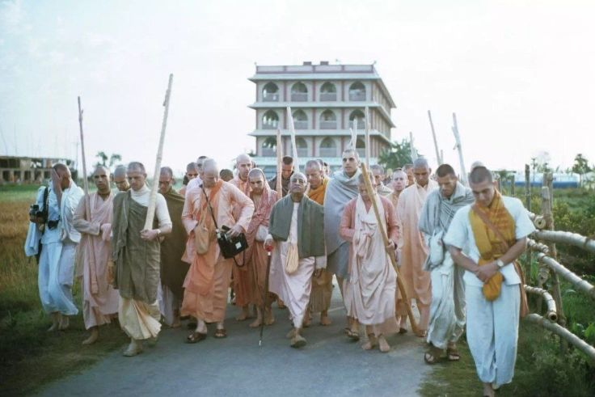

The glorious acarya
Krsna's Victory with prabhupad's sword

After the antya lila of sri Krsna on this bhumandala, dark period of kali begun to terrorize the innocent people and started to establish rule of chaos to confuse and trap the fallen living entities to do more sinful activities and totally defy the authority of supreme personality of godhead. Sri krsna defeated demons in all different styles, but kali is a demon who resides inside the conscious state of jiva so to defeat this kali yuga krsna appeared as granthraj srimad bhagvatam to defeat the kali by entering into the minds of the listeners, readers of this vedic treasure. But by just givinig the treasure of these litreatures like gita, bhagvatam it was not enough to krsna for the upliftment of the fallen.
So 500 years ago Krsna along with his pleasure potency made his divine descend as Sri Krsna Caitanya Mahaprabhu and practically taught the process for achieving the highest goal of life which is unalloyed devotional service to sri krsna and smt radhika thakurani, Mahaprabhu preached this krsna consciousness movement and lead an extraordinary and full of devotion life to show the practicle meathod of srimad bhagvatam. But after sri Caitanya's antya lila there was again a very dark period when kali again sprouted but this time in disguise of devotees, such devotees are named the kali chelas means the disciple of kali these chelas are so called devotees with lack of clarity and mood of the parampara and are only intrested in their own personal motos and envy the exalted devotees serious on the path of bhakti.
To refute all such things a personality appeared who was strong, stalwart, scholar and visionary, Srila Bhaktisiddhanta Saraswati thakur prabhupada under his leadership whole ground was clear to pull down again the gaur lila of sriman mahaprabhu, as predicted by srila bhaktivinod thakur;
When will that day come when fair-skinned foreigners (bilatiya shvetavarna purusha sakala) travel to Sri Mayapur-dhama and join with the Bengali Vaishnavas to chant, “Jaya Shacinandana, Jaya Shacinandana.” When will that day be?[commentary on chaitanya bhagvata]
Sripad Anandatitrtha Madhvacarya also predicted: “The real knowledge of the difference between jiva and Sri Hari and the service of Sri Hari will spread all over the world very shortly.” (Anu Madhva Vijaya - last chapter).Indeed this transcendental knowledge was spread all over the world by none other than Srila Prabhupada coming in the line of Srila Madhvacarya.
Sripada Ramanuja predicted: “The pure devotion to Sri Hari devoid of karma and jnana will grow and grow like a banyan tree covering the whole world, teaching everyone who takes shelter.” (Prapannamrta tarpana, last chapter). It is interesting to note in this connection how Srila Prabhupada’s ISKCON is preaching ‘jnana karmady anavrtam’ to ‘jare dekho tare’ in every town and village!
Thus, the personality who pulled down the transendental Gaura lila and continued it to this day aswell even after his physical disappearance from this mortal world, that personality , His divine grace Sri Srimad A.C Bhaktivedanta Swami Srila Prabhupad the glorious founder acarya of the International society for Krsna Consciousness ISKCON. Established the pure devotional service through out the globe, the Srimad Bhagvatam describes, bhavad-vidhā bhāgavatās tīrtha-bhūtāḥ svayaṁ vibho tīrthī-kurvanti tīrthānisvāntaḥ-sthena gadābhṛtā Devotees are verily holy places personified. Because they carry the Personality of Godhead within their heart, they turn all places into places of pilgrimage. sb 1.13.10
Wherever srila prabhupad went he turned that place a piligrimage, His presence purified everything his glance changed the crooked minds of evil conscious people into krsna conciousness, and fullfiled the prediction of Sri Caitanya Mahaprabhu
“Taking the sharp sword of the congregational chanting of the Holy Name, I will root out and destroy the demoniac mentality in the hearts of the conditioned souls.” “If some sinful people escape and giving up religious principles go to far off countries, then My commander in chief (Senapati Bhakta) will appear to chase them and distribute Krsna consciousness.” caitanya mangala
This society founded by srila prabhupad is so complete and strong under the strong leadership of srila prabhupad himself that this society can deliver the whole world, the transcendental vision of srila prabhupad will surely get fulfilled by his powerfull preaching and attack on kali, nammalvar saw the end result as “Victory ! Victory ! Victory ! I behold something wonderful: all the inauspiciousness of the living entities is destroyed, no one is going to hell, Yamaraja has no more any work, and the effects of Kali yuga ceased to exist. This is because all over the world an increasing number of Lord Visnu’s devotees sing His names while dancing and playing musical instruments.” (Tiruvaymoli (5.2.1), a section of the Divya-prabandha)
Thus, Krsna's victory over kali yuga is so glorious where the demon is defeated by the senapati commander in chief of krsna srila prabhupad by his revival of krsna consciousnes.
jay srila prabhupad
~Admin